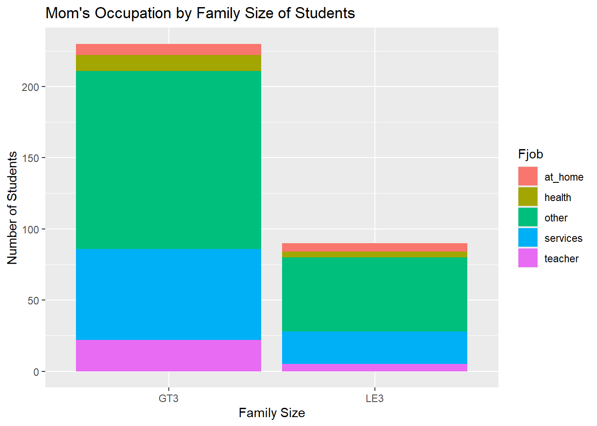

── Attaching core tidyverse packages ──────────────────────── tidyverse 2.0.0 ──
✔ dplyr 1.1.4 ✔ readr 2.1.5
✔ forcats 1.0.0 ✔ stringr 1.5.1
✔ ggplot2 3.5.2 ✔ tibble 3.3.0
✔ lubridate 1.9.4 ✔ tidyr 1.3.1
✔ purrr 1.0.4
── Conflicts ────────────────────────────────────────── tidyverse_conflicts() ──
✖ dplyr::filter() masks stats::filter()
✖ dplyr::lag() masks stats::lag()
ℹ Use the conflicted package (<http://conflicted.r-lib.org/>) to force all conflicts to become errors
##Task 1: Read in Data and Modify
###Part 1: Read in Data
#Provided code from documentationd1=read.table("student-mat.csv",sep=";",header=TRUE)d2=read.table("student-por.csv",sep=";",header=TRUE)d3=merge(d1,d2,by=c("school","sex","age","address","famsize","Pstatus","Medu","Fedu","Mjob","Fjob","reason","nursery","internet"))print(nrow(d3)) # 382 students
[1] 382
###Part 2: Inspecting the issue when using inner join with the selected variables
Warning in inner_join(d1, d2, by = c("school", "sex", "age", "address", : Detected an unexpected many-to-many relationship between `x` and `y`.
ℹ Row 79 of `x` matches multiple rows in `y`.
ℹ Row 79 of `y` matches multiple rows in `x`.
ℹ If a many-to-many relationship is expected, set `relationship =
"many-to-many"` to silence this warning.
The issue is detected on Row 79. It duplicated columns (G1, G2, G3, etc…) and add a suffix with what data set it came from (x or y). This is happening because it I believe some of the students have overlapping key variables so it a many-to-many join and not a one to one join.
###Part 3: Use an inner_join() on all variables other than G1, G2, G3, paid, and absences. Use his form of the combined data in further exercises.
###Part 4: Next, for the math data, Portuguese, and combined data, choose four categorical variables you are interested in and convert those into factor variables in each tibble (use the same four variables in each). Use the mutate() function to accomplish this.
school sex age address
Length:320 Length:320 Min. :15.00 Length:320
Class :character Class :character 1st Qu.:16.00 Class :character
Mode :character Mode :character Median :16.00 Mode :character
Mean :16.52
3rd Qu.:17.00
Max. :22.00
famsize Pstatus Medu Fedu Mjob
GT3:230 A: 31 Min. :0.000 Min. :0.000 at_home : 44
LE3: 90 T:289 1st Qu.:2.000 1st Qu.:2.000 health : 30
Median :3.000 Median :3.000 other :116
Mean :2.872 Mean :2.622 services: 75
3rd Qu.:4.000 3rd Qu.:4.000 teacher : 55
Max. :4.000 Max. :4.000
Fjob reason guardian traveltime
at_home : 14 Length:320 Length:320 Min. :1.000
health : 15 Class :character Class :character 1st Qu.:1.000
other :177 Mode :character Mode :character Median :1.000
services: 87 Mean :1.428
teacher : 27 3rd Qu.:2.000
Max. :4.000
studytime failures schoolsup famsup
Min. :1.000 Min. :0.00000 Length:320 Length:320
1st Qu.:1.000 1st Qu.:0.00000 Class :character Class :character
Median :2.000 Median :0.00000 Mode :character Mode :character
Mean :2.084 Mean :0.08125
3rd Qu.:3.000 3rd Qu.:0.00000
Max. :4.000 Max. :3.00000
paid.x activities nursery higher
Length:320 Length:320 Length:320 Length:320
Class :character Class :character Class :character Class :character
Mode :character Mode :character Mode :character Mode :character
internet romantic famrel freetime
Length:320 Length:320 Min. :1.000 Min. :1.000
Class :character Class :character 1st Qu.:4.000 1st Qu.:3.000
Mode :character Mode :character Median :4.000 Median :3.000
Mean :3.987 Mean :3.203
3rd Qu.:5.000 3rd Qu.:4.000
Max. :5.000 Max. :5.000
goout Dalc Walc health
Min. :1.000 Min. :1.000 Min. :1.000 Min. :1.000
1st Qu.:2.000 1st Qu.:1.000 1st Qu.:1.000 1st Qu.:3.000
Median :3.000 Median :1.000 Median :2.000 Median :4.000
Mean :3.069 Mean :1.438 Mean :2.225 Mean :3.522
3rd Qu.:4.000 3rd Qu.:2.000 3rd Qu.:3.000 3rd Qu.:5.000
Max. :5.000 Max. :5.000 Max. :5.000 Max. :5.000
absences.x G1.x G2.x G3.x
Min. : 0.000 Min. : 5.00 Min. : 0.00 Min. : 0.00
1st Qu.: 0.000 1st Qu.: 9.00 1st Qu.: 9.00 1st Qu.: 9.00
Median : 4.000 Median :11.00 Median :11.00 Median :11.00
Mean : 5.412 Mean :11.29 Mean :11.18 Mean :11.04
3rd Qu.: 7.250 3rd Qu.:14.00 3rd Qu.:14.00 3rd Qu.:14.00
Max. :75.000 Max. :19.00 Max. :19.00 Max. :20.00
paid.y absences.y G1.y G2.y
Length:320 Min. : 0.000 Min. : 0.00 Min. : 5.00
Class :character 1st Qu.: 0.000 1st Qu.:11.00 1st Qu.:11.00
Mode :character Median : 2.000 Median :12.00 Median :12.00
Mean : 3.247 Mean :12.39 Mean :12.57
3rd Qu.: 4.000 3rd Qu.:14.00 3rd Qu.:14.00
Max. :32.000 Max. :19.00 Max. :19.00
G3.y
Min. : 0.00
1st Qu.:11.00
Median :13.00
Mean :12.88
3rd Qu.:15.00
Max. :19.00
There are no missing values
###Categorical Variable Summaries
####Creating a one-way, two-way, and three-way contingency table for the factor variables created above**
, , = at_home
at_home health other services teacher
GT3 3 0 2 1 2
LE3 3 0 2 1 0
, , = health
at_home health other services teacher
GT3 1 4 1 2 3
LE3 0 1 1 1 1
, , = other
at_home health other services teacher
GT3 19 9 66 18 13
LE3 4 6 21 13 8
, , = services
at_home health other services teacher
GT3 10 7 14 24 9
LE3 2 2 3 9 7
, , = teacher
at_home health other services teacher
GT3 2 1 5 6 8
LE3 0 0 1 0 4
There are 3 students who have a family size larger than three and who’s parents both work at home.
####Creating a conditional two-way contingency table (2 separate methods)
#Filtering data and then creating the tabled3_filt <- d3 |>filter(Mjob =="teacher")method_a <-table(d3_filt$famsize, d3_filt$Fjob)method_a
at_home health other services teacher
GT3 2 3 13 9 8
LE3 0 1 8 7 4
#Creating a three-way contingency table and then slicing itd3_slice <-table(d3$famsize, d3$Fjob, d3$Mjob)method_b <- d3_slice[ , , "teacher"]method_b
at_home health other services teacher
GT3 2 3 13 9 8
LE3 0 1 8 7 4
There are 2 students that a family with more than 3 members in it and have a male parent who works as a teacher as well as female parent who works have home.
####Creating a two-way contingency table using group_by and summarize. Then using pivot_wider() to make the result look more like the output above**
There are 4 students who have a family size less than or equal to three who female parent works in the health industry.
####Creating a stacked bar graph using using family size and the female parents job
bar_plot <-ggplot(data = d3, aes(x = famsize, fill = Fjob))bar_plot +geom_bar() +labs(title ="Mom's Occupation by Family Size of Students",x ="Family Size",y="Number of Students")

The stacked bar plot is a visual representation of the distribution of student’s mother’s occupation by their family size (either greater than 3 members or less than or equal to 3 members).
###Numeric Variable Summaries
####Find measures of center and spread for three of these variables (including at least one G3 variable)